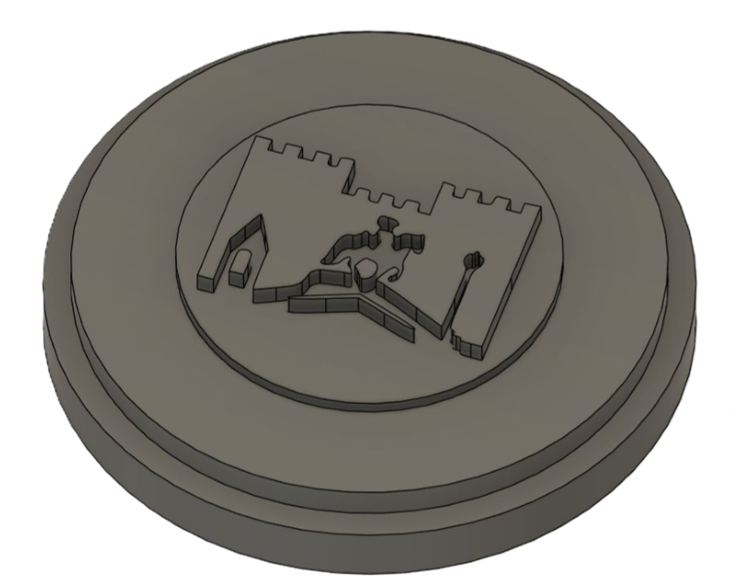
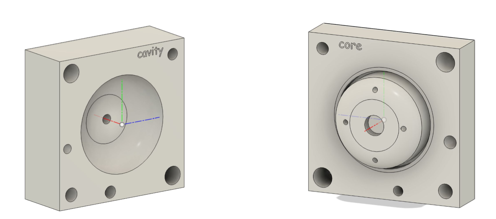
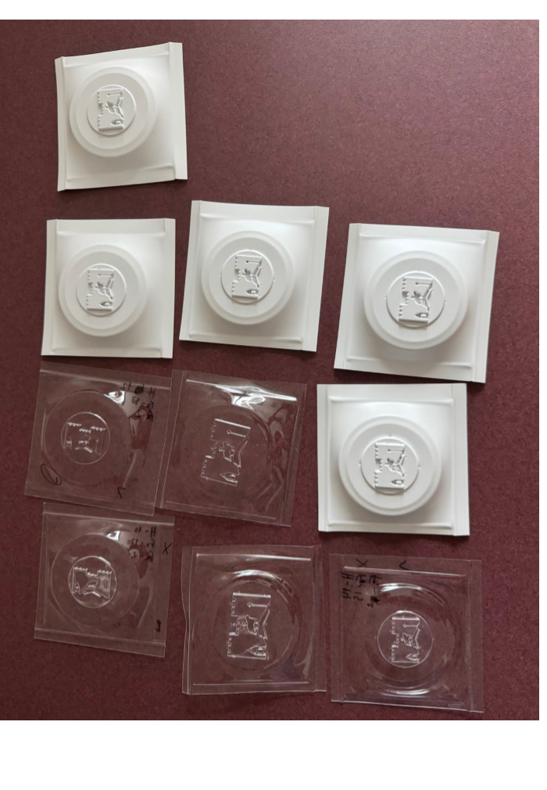
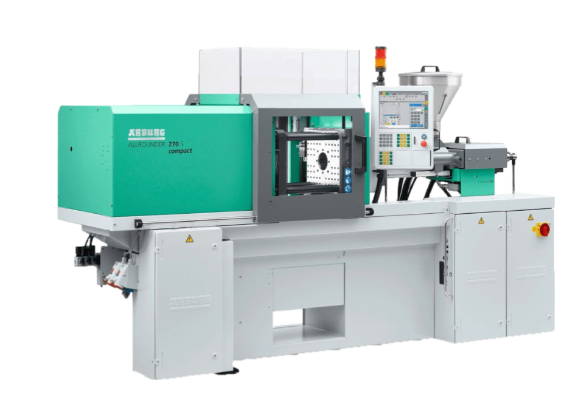
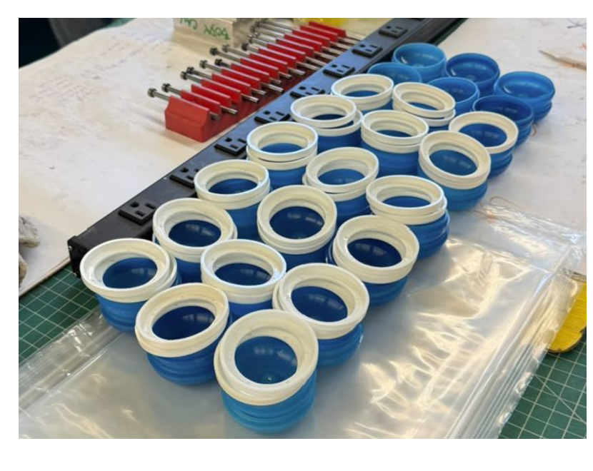
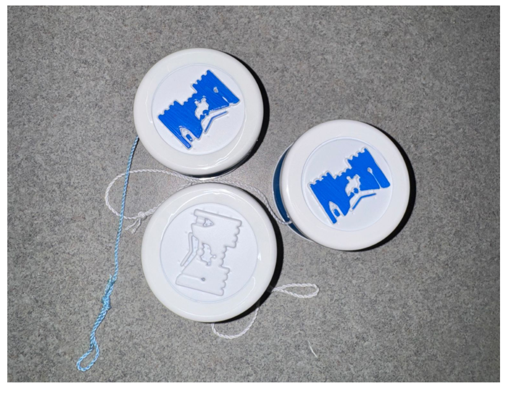

Yo-Yo Manufacturing
Overview
Our team designed and manufactured a custom yo-yo from scratch for the MIT Portugal Summer Program, working through the full production chain: mold design, SLA prototyping, CNC machined tooling, thermoforming, and injection molding. We built thirty of each part to run as a small production batch.
Designing the Mold
We designed the tooling in CAD first. The injection mold split into a cavity and a core that formed the yo-yo body, and a separate mold carried the Vila Viçosa crest as a raised feature for the thermoformed caps.

The thermoform mold, with the Vila Viçosa crest raised in the centre.

Cavity and core for the injection mold that formed the yo-yo body.
SLA Printing and Thermoforming
We printed the thermoform mold on an SLA printer to get the resolution the crest needed. From there we drilled vacuum holes through the mold so the heated plastic sheet would pull down tight against the detail rather than bridging over it. Thermoforming itself took several rounds of tuning: heat, fan time, and hold time all had to be balanced against each other, and we adjusted the source artwork to account for how far the plastic shrank once it cooled. The grid below shows part of that iteration, caps pulled at different settings and checked against the target ring size and feature depth.

Thermoformed caps from successive rounds of process tuning.
CNC Machining the Mold
While the thermoform mold went through SLA printing, we CNC machined the aluminium cavity and core for the injection mold, choosing feeds and speeds for each cutting pass. The two clips below are from that process: the CAM toolpath setup, and the mill cutting the mold itself.
CAM toolpath setup for the mold.
CNC machining the mold.
Injection Molding
With the mold finished, we ran it on an injection molding machine to produce the yo-yo bodies and rings, thirty of each. Getting a consistent run meant setting up the mold on its supports, calibrating the distance on the machine, and adjusting shot parameters until parts came out fully filled without flashing at the parting line.

The injection molding machine used to produce the parts.

The injection moulded bodies and rings, thirty of each.
Results
Assembling the injection moulded bodies and rings with the thermoformed, crested caps gave us thirty finished yo-yos.

Finished yo-yos, assembled and strung.